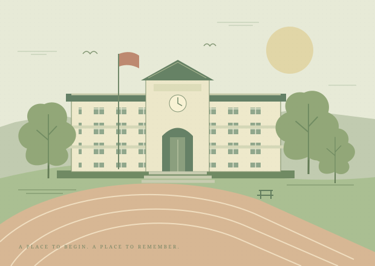

这是我们的班内空间
通讯录包含同学姓名、联系方式、城市、留言与更新时间，仅用于同学联络。口令和资料请勿转发至班外，也不用于营销。
BAOTOU NO.9 HIGH SCHOOL
包头市第九中学 · 2017级（2020届）18班
从九中的一间教室出发，走向各自的人生。
世界很大，十八班始终是一个可以回来的地方。

01 / OUR SHARED CHAPTER
有些关系，
不会因为距离而走散。
这里是包头市第九中学2017级（2020届）18班的同窗小站。我们把分散的联络方式认真整理，也为往后的相遇，留下一扇轻轻推开就能进来的门。
无论此刻身在何方，做着什么，愿你带着少年时的热忱，好好生活，也常常回来看看。
02 / THE CLASSMATE DIRECTORY
A LITTLE SPACE, JUST FOR US
输入原班级口令，在本机解密查看同学的联络方式与近况。
没有口令？请在原18班微信群回复网站发布消息，联系发起人获取。
欢迎回来。这里的每一份联络方式，都值得被认真保管。
换个名字或城市试试，也可以清除筛选。
需要更新资料？请在原18班微信群回复网站发布消息，联系发起人。本页不提供以共用口令修改他人信息的功能。
03 / A SMALL PROMISE
通讯录包含同学姓名、联系方式、城市、留言与更新时间，仅用于同学联络。口令和资料请勿转发至班外，也不用于营销。
资料由班级维护者整理。需要更正、删除或了解数据处理方式，请在原18班微信群回复网站发布消息，联系发起人；原表及私有历史备份不会随当前资料自动删除。
公开网页不包含明文个人资料，另附加密通讯录文件。口令仅在浏览器内用于解密，明文不保存在浏览器长期存储；共享口令无法识别个人，已复制的内容也无法追回。
本网站由同学自发维护，公共页面和加密通讯录由 GitHub Pages 托管，加密文件也保存在公开 GitHub 仓库及其历史中。输入口令后，浏览器下载密文并在本机解密；口令不发送到服务器。本页不再连接 Cloudflare，但原 Cloudflare Workers 与 D1 中的受保护资料副本仍保留，未因本次切换自动删除。
任何人都能下载密文并离线尝试解密，没有服务端限流或访问撤销。请使用原长随机口令，不改为手机号或简单密码；口令被转发时，班外持有者也可能访问。更换口令不能使已下载的旧密文失效，也无法追回旧副本或已复制的明文。本页解锁最长12小时；退出、刷新、离线或到期只清除本页资料，不是远程撤销。
当前页面仅供查阅，更新需由维护者核对后重新加密并发布。未填写的字段不会被推测补全；如不希望资料继续用于本网站，请在原18班微信群回复网站发布消息，联系发起人。新网站专用维护备份仅保存在维护者的本机受限目录，保留30天并由维护者手动清理，尚未自动化。原腾讯文档与原系统历史备份不在本次清理范围；GitHub历史密文、原云端副本及他人下载副本也不会随当前版本更新而自动清除，删除请求需分别定位处理。GitHub托管及原Cloudflare存储可能涉及境外处理，不保证中国境内存储。
愿我们各自发光，
也常常相聚。